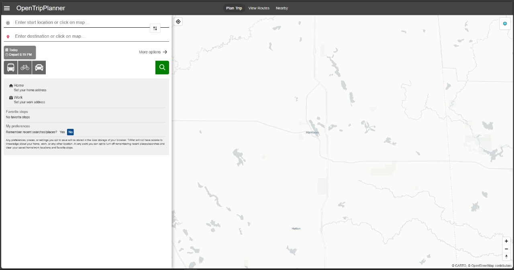
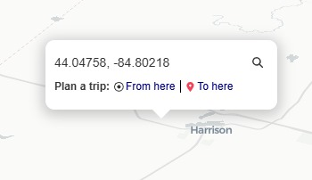
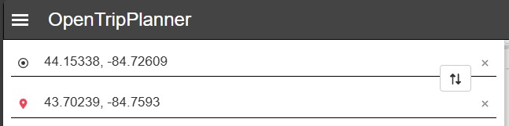
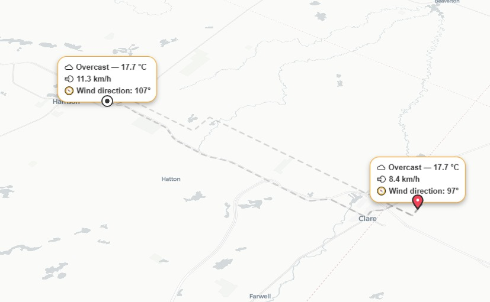
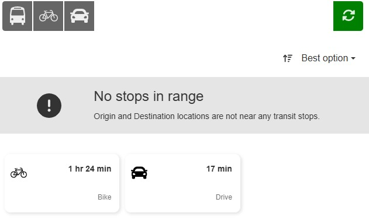
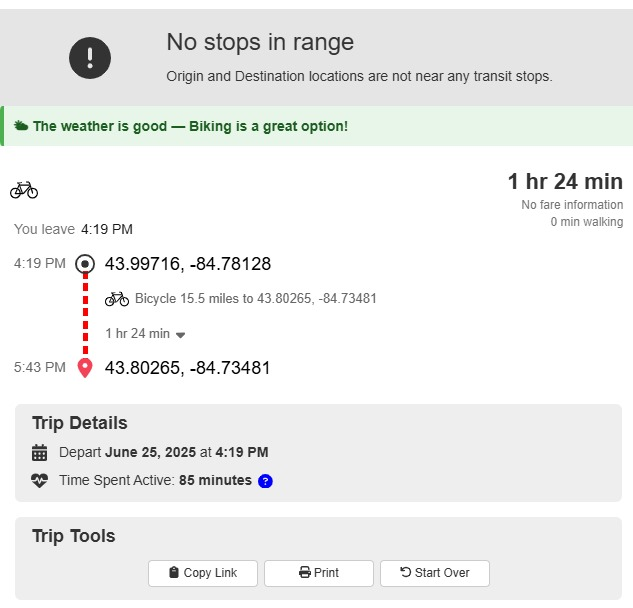
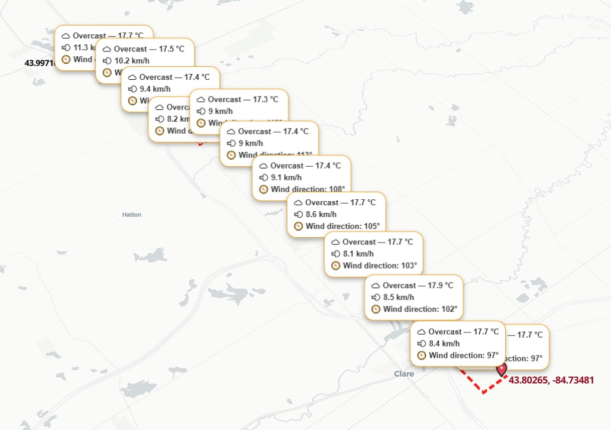
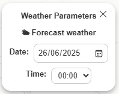
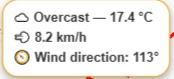
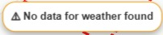

Manual de usuario
Esta sección está dirigida a personas no técnicas que desean comprender cómo utilizar Urbano Libre para consultar rutas con condiciones climáticas en tiempo real o histórico.
¿Qué puedes hacer?
- Consultar el clima a lo largo del trayecto.
- Elegir la fecha y la hora que desees analizar.
- Visualizar alertas con el estado del clima.
Ejemplos de uso en computadora
1. Generar una ruta paso a paso
Al abrir la aplicación encontrarás un panel en el lado izquierdo y, a la derecha, un mapa interactivo que ocupa la mayor parte de la pantalla.

Explorar el mapa
Mantén presionado el botón izquierdo (o derecho) del ratón y arrastra para mover el mapa.
- Punto de origen
Haz clic derecho sobre la ubicación deseada en el mapa y selecciona “From here”.

- Punto de destino
Repite el proceso, pero elige “To here”.
Entrada manual
Si lo prefieres, en la esquina superior izquierda hay un formulario para ingresar coordenadas directamente.

Después de definir origen y destino se mostrarán tarjetas con información del clima en cada lugar.

En el panel izquierdo selecciona el modo de transporte que quieres analizar.
Elige el itinerario que más te interese.

Warning
No siempre se muestran todos los itinerarios disponibles; depende de la configuración del planificador.
Se despliega el detalle de la ruta y, si el modo es bicicleta o caminata, aparece un mensaje recomendándote si es seguro utilizarla según el clima.

Con un itinerario activo se generan más tarjetas a lo largo del trayecto.

2. Cambiar la fecha y la hora
Pulsa el botón 📅 situado en la parte superior derecha.
Selecciona el día y la hora para conocer el clima en ese momento.
Puedes planificar hasta 14 días en el futuro o consultar días anteriores.

3. Información de la tarjeta
Cada tarjeta tiene tres estados posibles:
| Estado | Ejemplo |
|---|---|
| Información encontrada |  |
| Buscando datos | |
| Sin datos |  |
Detalle de campos:
- Clima general — Puede mostrar:
☀️ Clear sky / 🌤 Partly cloudy / ☁️ Overcast / 🌫 Fog / 🌦 Drizzle / 🌧 Rain / ❄️ Snow / ⛈ Thunderstorm / 🔍 Unknown - Temperatura (°C).
- Velocidad del viento (km/h).
- Dirección del viento (grados).
Preguntas frecuentes
¿Qué pasa si no hay información del clima?
Probablemente estés consultando más allá de los 14 días permitidos o la API de Open‑Meteo no dispone de datos para esa zona.
¿Por qué no veo marcadores?
Verifica tu conexión a internet. Si persiste, espera a que el servicio de Open‑Meteo restablezca la respuesta.